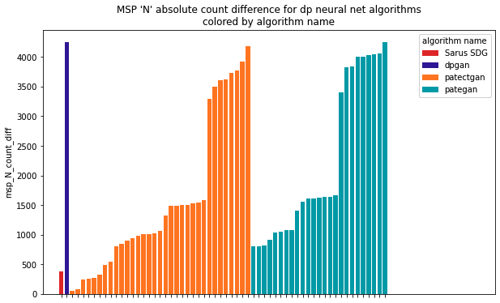
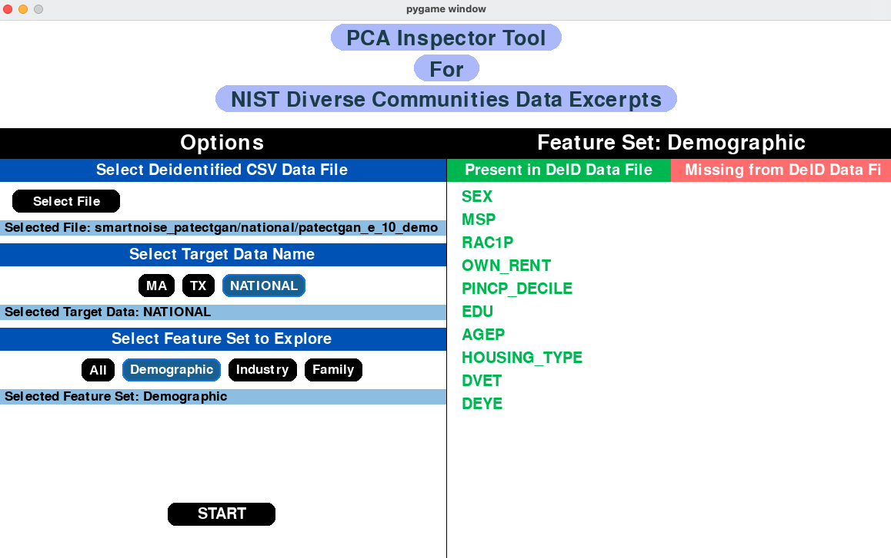
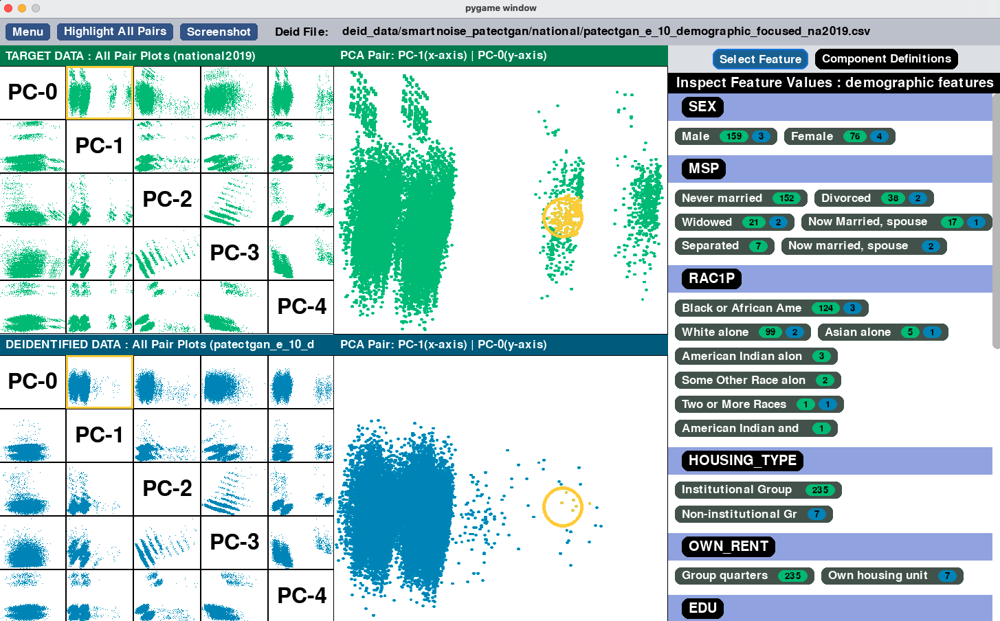
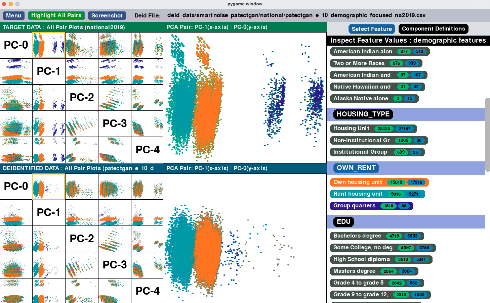
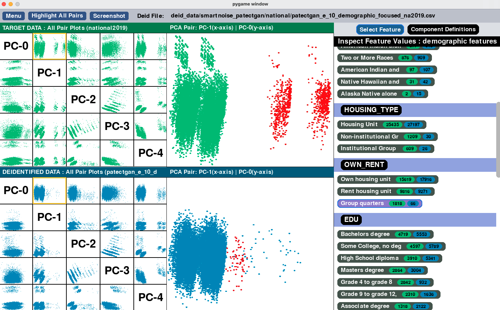
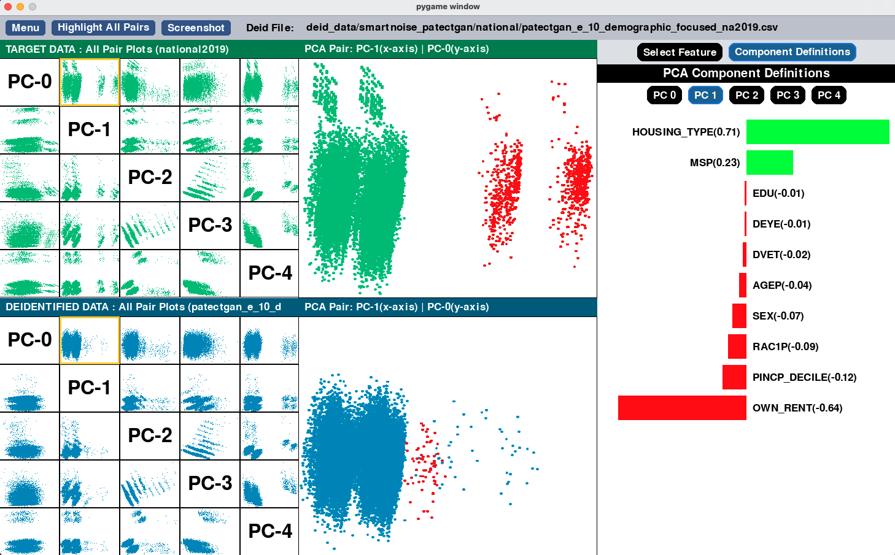

CRC Research Acceleration Bundle
The CRC seeks to equip the research community with resources to explore, evaluate, and discuss deidentification approaches.
Contents:
Deidentified Data Archives
Download the Research Acceleration Bundle and explore! This archive of deidentified data samples and evaluation metric results provides a broad, representative sample of data deidentification as a whole.
The target data for this project are the NIST Diverse Communities Excerpts , curated data drawn from the American Community Survey. The archive is comprised of deidentified versions of the Excerpts data as generated by a wide variety of deidentification algorithms, libraries and privacy definitions. Check out our Algorithm Summary Table for a high level glimpse of the current archive contents.
The bundle also includes tools and reports designed to support meta-research which we hope will lead to a more foundational understanding of the mechanics of privacy, utility and equity on diverse populations. Scroll down this page for a tour of the exploration tools we provide along with the bundle.
Tutorial notebooks
Included in the version 1.1 of the CRC Research Acceleration Bundle, we provide a notebooks directory containing a complete set of tools to make the archive widely accessible for programmatic navigation and analysis.
Notebook Utility List (libs)
The notebooks folder includes a library of utilities to assist with navigating the deidentified data archive (Data and Metrics Bundle):
- Index.csv file with metadata (library, algorithm type, privacy type, research paper doi, parameter settings, etc) on every technique and deidentified data sample in the archive.
- Utility to provide easy access to the index.csv file, including help function with metadata definitions.
- Utility to assist navigation through metrics available in report.json files. Utility to assist navigation through archive file hierarchy.
- Utility to easily generate bar charts and scatterplots with configurable colored highlighting by deid technique metadata. Utility to make human-readable display labels for deid samples
- Utility to configure and display collections of metric visualizations from the SDNist reports
For newcomers to python/pandas:
Welcome! We also teach everything you need to know about pandas dataframes:
- Reading data from csv file, creating new data frames
- Displaying excerpts of data frames
- Adding new columns, updating and operating on columns
- Filtering rows, iterating over rows
- Sorting rows based on selected columns
Introduction Tutorial:
We teach all the basics for performing meta-analysis on the deidentified data archive:
- Setup notebook.
- Load deid datasets index file (index.csv).
- Select specific deid. datasets from the index dataframe.
- Working with the deidentified data csv files.
- Working with the target data csv files.
- Compare target and deid datasets.
- Use index.csv to highlight plots by algorithm properties.
- Access SDNIST evaluation reports.
- Show relationship between two evaluation metrics.
- Identify specific data samples of interest.
- Show images from SDNist evaluation reports.
- Get evaluation metrics for specific samples of interest.
Quickstart Example Jupyter Notebooks:
For folks more familiar with pandas and jupyter notebooks, we include quickstart example notebooks to demonstrate common tasks.
Example Notebook 1: Analyzing k-marginal score of deidentified datasets.
We demonstrate using a notebook to collect utility scores from the report.json files for all of the deidentified data submissions in the archive. We use the CRC plotting utility to display these scores as bar plots based on different algorithm properties.
Example Notebook 2: Imposter plot (propensity scores and inconsistencies).
We show how to collect the counts of individuals in the 100% confidence propensity bin (obviously synthetic records, 'imposters') across all deidentified data submissions. We then provide a scatterplot comparing imposter count with inconsistencies count. This notebook demonstrates accessing metrics in report.json files and metric result .csv files, and using the CRC plotting utility to make highlighted scatter plots.
Example Notebook 3: Race distribution
We show how to check deidentification impact on race distribution by directly counting individuals in the target and deidentified data csv files. We filter the index.csv metadata to print a data frame containing this score alongside relevant algorithm properties.
Example Notebook 4: Privacy utility trade-off
We use the data and metrics archive to empirically explore the classic concept of the “privacy/utility trade-off curve”. This notebook collects utility and privacy metrics from the report.json files and uses the CRC plotting tool to produce scatterplots highlighted by technique properties.
Pair-wise PCA Inspection Tool
Pairwise PCA is a relatively new visualization metric that was introduced by the IPUMS International team during the HLG-MOS Synthetic Data Test Drive. It lets us look at the high dimensional data distribution using a set of 2D scatterplots along principle component axes. The plots look at the deidentified data and target data from the same angle (ie, using axes from the target data), so we can directly see where their distributions differ from each other.
The pairwise PCA tool lets you interactively explore these plots using a GUI interface. You can install it by following the directions here .
We provide a brief usage guide below.
Step 1: Select your deidentified data
Select a deidentified data file and the appropriate target data file (MA, TX or National). Select a feature set. The tool will let you know whether your data contains the all the features for that feature set- it's fine if there are a few missing features, it will only use the ones that are present.
Step 2: Explore the plot
Select a deidentified data file and the appropriate target data file (MA, TX or National). Select a feature set. The tool will let you know whether your data contains the all the features for that feature set- it's fine if there are a few missing features, it will only use the ones that are present.
Step 3: Highlight the plot
In the features list you can click on a feature to highlight the plots. If you click on a specific value, it will highlight only the selected group. You can check if you'd like to highlight on all pair plots (this may run slower). You can take a screenshot using the screenshot button, and it will be stored in the PCA tool's screenshots folder for you.

Step 4: Check out the component definitions
In the component definitions tab, you'll find the definitions for all five component axes used to make the plots. You can see which features had high or low weight (influence) and whether that influence was in the positive or negative direction. Try highlighting a plot by its high weight features and see what happens! How does that compare to the low weight features?
